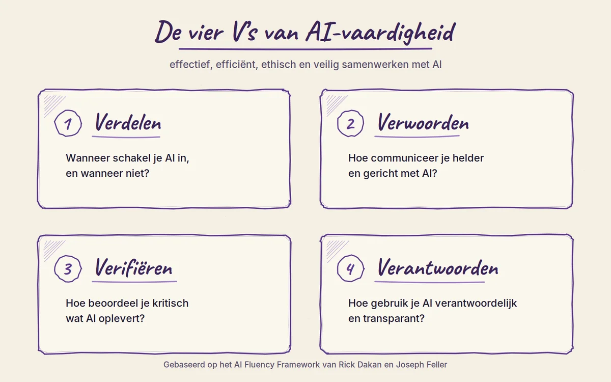
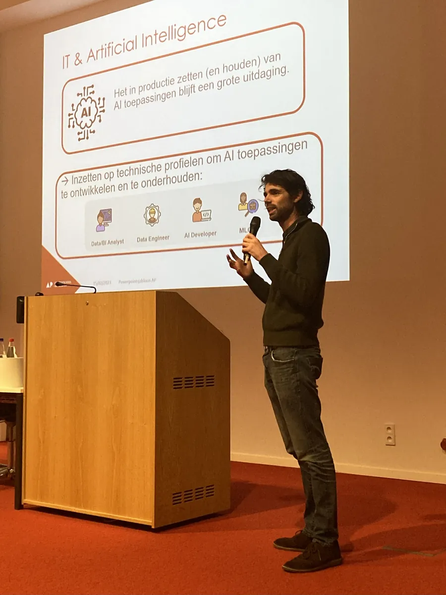

Lezing & workshop
Op maat van jouw publiek en van wat er vandaag in AI gebeurt.

Het masker van AI
AI komt naar ons toe verpakt in beloftes, marketing en krantenkoppen. Deze lezing haalt dat masker weg en toont met feiten en duiding wat er werkelijk speelt, en wat dat betekent voor werk en samenleving.
De lezing vertrekt van het gelijknamige boek, maar is nooit twee keer dezelfde.
- Op maat van je publiek. Een lerarenkorps, een directiecomité, een team softwareontwikkelaars en IT'ers, een zorgteam of een zaal geïnteresseerde burgers: voorbeelden, diepgang en accenten sluiten aan bij hun dagelijkse praktijk.
- Op maat van de actualiteit. AI verandert elke maand. Elke lezing krijgt de meest recente ontwikkelingen en cases mee, zodat je publiek vertrekt met een actuele blik.
- Voor wie
- Elk publiek, technische voorkennis is niet nodig
- Formaat
- Keynote of lezing, eventueel met vragenronde of panelgesprek
- Waar
- Bij jou ter plaatse of online
- Duur
- In overleg, afgestemd op je programma
Mogelijke thema's
Samen kiezen we de thema's die voor jouw publiek het meest relevant zijn. Enkele mogelijkheden:
AI en werk
Wat verandert er echt aan jobs en taken? Over productiviteitsbeloftes, werkdruk en wie de winst opstrijkt.
De ecologische voetafdruk
Energie, water en grondstoffen achter elke prompt, en waarom AI-bedrijven daarover zo weinig transparant zijn.
Digitale soevereiniteit
Hoe afhankelijk worden Vlaanderen en Europa van Amerikaanse techbedrijven, en welke rol spelen chips in de geopolitiek?
Privacy en surveillance
Van scanwagens tot gezichtsherkenning: wat gebeurt er als algoritmes regels toepassen zonder menselijke afweging?
Taal, hype en beeldvorming
Waarom woorden als "hallucineren" en "denken" AI vermenselijken, en hoe dat onze kritische reflex verzwakt.
AI-agents en controle
Van chatbot naar zelfstandig handelende agent: wat kunnen ze echt, en wie houdt de controle bij fouten of misbruik?
Onderwijs en denken
Schrijven is denken. Wat betekent het voor leren en evalueren als AI tussen ons en onze woorden komt te staan?
Informatie en media
AI-zoekmachines, desinformatie en een internet waarvan het verdienmodel onder druk staat.
Rechtvaardigheid en bias
Wie wordt benadeeld door beslissingen van AI-systemen, en hoe maak je dat zichtbaar?
Regelgeving
De Europese AI Act in de praktijk: reguleren of innoveren, of is dat een valse tegenstelling?

AI-vaardigheid
Geen trucjes om te prompten, wel een manier van denken. Rond de vier V's ga je actief aan de slag:
- Verdelen: wanneer schakel je AI in, en wanneer niet?
- Verwoorden: hoe communiceer je helder en gericht met AI?
- Verifiëren: hoe beoordeel je kritisch wat AI oplevert?
- Verantwoorden: hoe gebruik je AI verantwoordelijk en transparant?
- Op maat van je publiek. Je werkt met cases uit je eigen sector en met je eigen opdrachten, of het nu gaat om een team, een organisatie of een onderzoeksgroep.
- Op maat van de actualiteit. De oefeningen gebruiken de tools en mogelijkheden van vandaag, van chatbots tot AI-agents.
- Voor wie
- Teams, organisaties en onderzoeksgroepen
- Formaat
- Hands-on: oefenen, evalueren en bijsturen
- Waar
- Bij jou ter plaatse of online
- Duur
- In overleg, afgestemd op je groep
Vraag een sessie aan
De lezing en de workshop worden op aanvraag georganiseerd. Vertel kort wie je publiek is en wat je wilt bereiken. Dan stellen we samen een sessie op maat samen.

Liever bellen? +32 485 63 46 72
Slides van eerdere lezingen vind je in het nieuwsoverzicht.